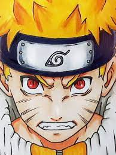
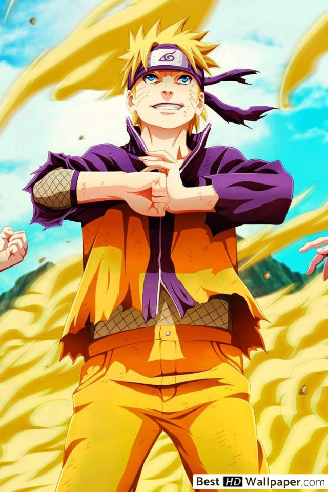
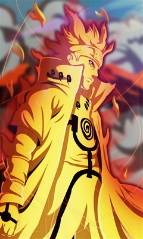
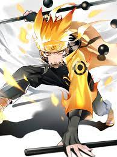
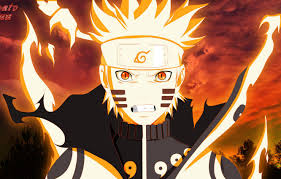

Наруто-герой очень настойчивый и упрямый до смерти!
Его детская мечта об Хокаге стало явью.
Он своими стремлениями вдохнавльял других и сам не замичая этого!
Ну
в конце концов он стал седьмым(7) Хокаге!
детства Наруто Узумаки
(Узумаки Наруто) — шиноби Деревни Скрытого Листа. Главный персонаж вселенной. В день своего рождения стал джинчуурики Девятихвостого Демона-Лиса — судьба, из-за которой он стал изгоем для большей части людей в Конохе на протяжении всего своего детства. После присоединения к команде Какаши, Наруто упорно трудился, чтобы получить признание всех в деревне и исполнить свою заветную мечту стать Хокаге. В последующие годы, благодаря многим трудностям и испытаниям, он стал способным ниндзя, которого считали героем Конохагакуре, и после во всем мире, он стал известен как Герой Скрытого Листа (яп. 木 ノ 葉 隠 れ の 英雄, Конохагакуре но Эйю). Вскоре, он оказался одним из ключевых факторов победы в Четвертой Мировой Войне Шиноби, что в конце-концов привело его к достижению своей мечты, когда он стал Седьмым Хокаге (яп. 七 代 目 火影; Буквальное значение: Тень Огня Седьмого Поколения).
По словам Джирайи, Наруто сильно напоминает отца:[14] он имеет светлые, остроконечные волосы и голубые глаза, в то же время унаследовав форму глаз и лица матери.[15] Его отличительной чертой являются три отметины в виде усов с каждой стороны на его щеках. Во время Четвёртой Мировой Войны Шиноби, Дан Като изначально принял Наруто за Наваки, из-за их сильного сходства.[16] Наруто был довольно низким для своего возраста во время Части I,[17] хотя позже он вырос и стал выше Сакуры в Части II.[18] Наруто первоначально носил зеленые очки на лбу, но он перестал их надевать, когда стал генином.
По словам Джирайи, Наруто сильно напоминает отца:[14] он имеет светлые, остроконечные волосы и голубые глаза, в то же время унаследовав форму глаз и лица матери.[15] Его отличительной чертой являются три отметины в виде усов с каждой стороны на его щеках. Во время Четвёртой Мировой Войны Шиноби, Дан Като изначально принял Наруто за Наваки, из-за их сильного сходства.[16] Наруто был довольно низким для своего возраста во время Части I,[17] хотя позже он вырос и стал выше Сакуры в Части II.[18] Наруто первоначально носил зеленые очки на лбу, но он перестал их надевать, когда стал генином.
Наруто характеризуется как шумный, буйный и неортодоксальный, весьма похожий на Хашираму Сенджу.[20] Он унаследовал словесную речь матери, поскольку он заканчивает свои предложения "Даттебайо!" (яп. だ っ て ば よ!) когда возбужден или расстроен. Хотя Наруто лучше всего реагирует на конкуренцию и не боится просить о помощи, он относительно наивен, прост и не понимает принципов или ситуаций. Он часто требует упрощенной аналогии для понимания объяснений[21] и может даже забыть некоторые понятия, которые сам отметил ранее.[22] Наруто осознает свои недостатки и признает, что он действует решительно, чтобы замаскировать свое смущение и разочарование в отношении к нему.[23][24] Несмотря на свою наивность, Наруто может быть вполне наблюдательным, поднимая то, что другие пропускают и сохраняет информацию, случайно собранную в разговоре.
Растущий как сирота, который страдал от ненависти и социальной изоляции со стороны жителей деревни, это повлияло на характер Наруто несколькими способами: он не обращает внимания на формальность и социальное положение, обращаясь к некоторым людям с прозвищами вместо имени, хотя к моменту его взросления Наруто перерос эту черту, поскольку он перестал называть Ли "Толстобровик" и называет его по его имени,[26][27] у него есть придирчивые привычки к еде, рамен - его любимая еда; у него есть извращенная сторона, которая проявляется как использование Техники Соблазнения или попытки заглянуть в женские ванны,[28] он не понимал реального смысла "любви" и полагал, что любовь или любимый, что-то вроде любви к рамену. У Наруто есть личность, которая привлекает к нему людей,[29] когда они видят искреннюю доброту Наруто, и его доброта может в корне поменять мировоззрение человека. Таким образом, он способен строить отношения, которых ему не хватало в ранней жизни; Мудрец Шести Путей считает, что доброта Наруто - это особый дар, который позволил ему спасти Девятихвостого от его ненависти.[30] Наруто хранит эти узы и пойдет на многое, чтобы защитить их, и лучше всего - их дружбу с Саске после ухода последнего из Конохи. Время, проведенное Наруто на водопаде Истины, показало, что часть его ненавидела жителей деревни за то, что они изгнали его, а потом восхищались им после того, как он спас их во время нападения Пейна. Столкнувшись с этим, он научился мириться с этим фактом, охотно становясь больше того, что он терпел.
взросление Наруто Узумаки и его мечты
Другая из характерных черт Наруто - его стремление к признанию другими; его шалости в деревне были для того, чтобы его заметили или, по крайней мере, ругали его. Поэтому он мечтал о том, чтобы однажды стать Хокаге Конохи, олицетворением признания и уважения со стороны всех жителей деревни.[32] Зная, что его мечта - длинная, трудная и, казалось бы, невозможная, Наруто разработал свой собственный путь, чтобы никогда не нарушать свое слово. Эта жизненная философия служит краеугольным камнем большой уверенности Наруто; он считает, что он может достигнуть любой цели, упорно и настойчиво работая, независимо от того, насколько велико препятствие или как много времени это берет, чтобы завершить его. Эта черта направляет его во многих аспектах жизни, таких как его обещание вернуть Саске обратно в Коноху. Со временем его цель быть Хокаге выросла из желания признания других в желание помочь и защитить близких ему людей, что Тоби приписал Воле Огня.[33] Его путь подкрепляется его пониманием того, что шиноби должны превозмогать трудности.[34] Его вера в тяжелый труд и настойчивость заставила его ненавидеть людей, которые использовали неискренние способы для достижения своих целей, поэтому он дисквалифицировал своего сына на Экзаменах Чуунина за использование запрещенного оружия и выразил отвращение к Момошики и Киншики Ооцуцуки за то, что они полагались на собирание чакры, чтобы набирать силу легким способом.
После смерти своего крестного отца Джирайи, беседуя с Минато и слушая трагическую историю Нагато, Наруто стал понимать цикл ненависти и поклялся сломать его, чтобы принести мир всему миру.[36] С этой целью его участие в Четвертой Мировой Войне Шиноби заключается не только в защите его друзей, но и в том, чтобы полностью и навсегда уничтожить всю ненависть. Однако, встретив реинкарнированного Итачи Учиху, Наруто понимает, что он не может справиться со всем остальным и что он должен позволить своим друзьям поддерживать и сражаться рядом с ним. Поскольку он делает это в период кульминации войны, его боевой дух вдохновляет Союзные Силы Шиноби присоединиться к нему и продолжать борьбу, чтобы положить конец войне, в конечном счете, стать примером для многих людей восхищаться, следовать и верить
  Наруто впервые встретил Хинату Хьюга, когда они были детьми, где его открытая доброта и мужественный дух заслужили её восхищение, которое переросло в любовь. Со своей стороны Наруто оставался в основном равнодушным на чувства Хинаты и даже считал ее "странной" из-за ее застенчивости к нему. Тем не менее, положение вещей меняется во время Экзаменов Чуунина в Части I, когда они начали больше поддерживать друг друга, заставляя Наруто любить ее как друга. В Части II, когда Хината рискует жизнью, чтобы защитить Наруто, он, в свою очередь, увидел ее сильным человеком. Несмотря на его безмолвие, Наруто действительно полюбил Хинату подсознательно, но он не мог осознать это, потому что продолжал сражаться за любовь Сакуры, что было просто еще одним способом конкурировать с Саске. Во время Наруто: Последний Фильм, Наруто, наконец, признает свою любовь, что заставляет его чувствовать немного смущённо. Понимая, что она всегда верила в него и что она всегда была за него во всём, он желает быть с ней оставшуюся жизнь
Будучи взрослым, Наруто становится мудрее и более зрелым, хотя он сохраняет некоторую небрежность в отношении почитания.[39] Хоть он, наконец, и достигает своей мечты стать Хокаге, его многочисленные задачи не только иногда его подавляют, но часто оставляют его неспособным проводить время со своей семьей, особенно расстраивая его сына Боруто. Он признает, что одной из причин является его жизнь без отца рядом, что затрудняет ему понимание того, как правильно общаться со своими детьми, в основном, с его сыном.[40] Наруто также более ответственен в своих обязанностях как Хокаге и как отец: он запрещает использование Коте в экзаменах Чуунина, поскольку он уменьшает истинный потенциал шиноби; он разочарован обманом Боруто на экзаменах и даже забирает у него протектор перед аудиторией после своего нравоучения. Тем не менее, Наруто очень любит свою семью, поскольку он создает теневых клонов, чтобы прийти к ним, когда он занят, защищает их во время опасности, проводит время с ними, когда может, и выражает гордость за успехи своих детей.[35] Он фактически принимает философию Хирузена, что все в деревне - его семья, полагая, что истинные отношения состоят из любви, а не кровных отношений.[41] Его отказ дать сыну какое-либо особое отношение из-за их кровных отношений, а также настойчивость в том, чтобы мальчик профессионально обращался к нему как к "Седьмому" или "Хокаге", находясь в его офисе, является свидетельством отсутствия предубеждения Наруто.
Свершения Наруто Узумаки
В аниме, вскоре после ухода из Конохи, Джирайя и Наруто обсуждают тот факт, что Наруто нужно будет научиться противостоять гендзюцу, если он собирается сразиться с Саске в следующий раз, когда они встретятся. Наруто тренируется с Гамарики, чтобы развеять гендзюцу, но он борется с ней, и его чакра продолжает ударять Гамарики, которая не ценит это. Наруто следует за Джирайей в Деревню Дерева Гендзюцу, чтобы попробовать другой подход, но они обнаруживают, что деревня была захвачена Кандачи. Они освобождают жителей деревни, а затем атакуют Кандачи, которого Наруто побеждает с помощью Большого Шара Расенгана. Когда они уходят после этого, Джирайя доволен тем, насколько похож Наруто на Минато Намиказе и обнимает его, что беспокоит Наруто.
Через два года в их обучении Наруто контролировал Чакру Девятихвостого. Джирайя пытается дать ему больше доступа к силе Девятихвостого и использует Геротора для ослабления печати Наруто. Воспользовавшись этой возможностью, Девятихвостый начал издеваться над Наруто за его неспособность спасти Саске, используя отрицательные эмоции Наруто, чтобы заставить его войти в Версию 2 с четырьмя хвостами. Не контролируя свое тело, Наруто атакует Джирайю и почти убивает его, прежде чем он сумеет подавить Девятихвостого. Наруто не помнит, что произошло, и Джирайя не говорит ему, вместо этого переводит тренировку Наруто на другие занятия, в том числе держит свой гнев под контролем, чтобы Девятихвостый снова не напал.

Когда Наруто вернулся в Коноху после двух с половиной лет тренировок с
Джирайей, Команда 7, теперь уже без Саске, была переименована в
Команду Какаши. Он, первым делом, провёл очередное испытание, как
когда-то уже делал ранее — испытание с колокольчиками. Не смотря на
улучшение способностей обоих, они не смогли победить Какаши, который
использовал Шаринган и только благодаря тому что Наруто угрожал
рассказать содержание Ича Ича последней книги Джирайи, чего Какаши,
как большой фанат, не мог себе позволить, отвлекли его и смогли
забрать колокольчики. Наруто вновь встретился со всеми своими старыми
друзьями, которые все уже стали чуунинами или выше и услышал что
Гаара, теперь Пятый Казекаге.
В то время как Команда Какаши безуспешно пытается найти миссию, чтобы
Наруто не ныл, до Конохи доходит письмо, что Акацуки похитили Гаару.
Команда Какаши отправляется в Сунагакуре для оказания помощи в
спасении Гаары. По пути к Суне Наруто объясняет, что Гаара был
похищен, потому что он - джинчуурики Однохвостого, так же, как и он -
джинчуурики Девятихвостого. По прибытии в Суну Наруто защищает Какаши
от нападения Чиё, когда она ошибается и думает что Какаши это Белый
Клык Конохи. Команда Какаши собирает то, что может им пригодится в
битве с похитителями Гаары, и следует за врагами. Чиё добровольно
сопровождает их, так как они полностью не знакомы со Страной Ветра.
Наруто обещает оправляется Канкуро, что спасет Гаару, прежде чем они
уходят из деревни.
На пути в логово Акацуки, они столкнулись с двойником Итачи Учихи. В
коротком бое они быстро одержали победу с помощью Большого Шара
Расенгана Наруто, так как клон обладал лишь 1\3 чакры. Они
продолжаются иди в логово Акацуки, встречаясь с Командой Гая, которые
снимает барьер над входом, так что Команда Какаши может войти в
логово. Так они нашли тело Гаары, которое было у двух других членов
организации, Дейдары и Сасори. Когда Дейдара улетел с телом, Какаши и
Наруто последовали за ним, оставляя Сасори на Сакуру и бабулю Чиё.
Какаши, хоть и не мог вступить в бой с летающим Дейдарой, смог отвлечь
его с помощью своего Мангекьё Шарингана — Камуи, что дало возможность
Наруто атаковать его напрямую и забрать тело Гаары. Когда Дейдара
сбежал, Наруто и Какаши встретились с Сакурой и Чиё, которые смогли
убить Сасори.
Гаара очнулся после своего воскрешения.
Не смотря на то что Сакура пыталась исцелить Гаару, он был мёртв из-за
процедуры извлечения биджу. Наруто очень разозлился и начал упрекать
Чиё за то что она запечатала Шукаку внутри него и это стало причиной
его смерти, хотя сам Гаара не выбирал такую судьбу. Что бы исправить
это, Чиё с помощью Наруто смогла воскресить его ценой своей
собственной жизни. Казекаге очнулся в окружении шиноби своей деревни и
тех шиноби Конохи, что спасли его. После похорон бабули Чиё, Наруто и
Гаара наконец-то пожали руки по настоянию Гаары что бы закрепить свои
близкие, дружественные отношения. После этого Команда Какаши и Команда
Гая вернулись в Коноху.
Спасение Конохи Узумаки Наруто
Наруто, в Режиме Мудреца, вместе с Фукасаку, Гамакеном, Гамахиро, Гамабунтой и Гамакичи, были призваны в центр Конохи. Наруто не сразу понял почему находится посреди гигантского кратера, однако увидев в далеке Монумент Хокаге понял, что Пейн разрушил селение. Наруто, в ярости, уничтожает Путь Асуры прежде чем тот смог атаковать Цунаде и сказал ей что бы никто из жителей не вмешивался. Путь Зверя призвала значительное количество животных, что бы атаковать Наруто, однако он используя физическую силу в Режиме Мудреца смог "перекинуть" их своим жабьим союзникам, которые и занялись призывными животными. Пока они сражались, Наруто уничтожил Путь Преты с помощью Жабьего Каратэ, прежде чем смог показать настоящие плоды тренировки в сендзюцу: завершённый Расенсюрикен. Он метает его в оставшиеся тела Пейна и техник взрывается рядом с ними, уничтожая Путь Человека. Так как чакра уже заканчивалась, Наруто попросил Гамабунту проглотить Путь Зверя и там уничтожил его с помощью Двойного Расенгана без вмешательства остальных тел.
Когда его сенчакра закончилась, Фукасаку призвал одного из клонов, несколько которых Наруто оставил на Горе Мьёбоку, собирая природную чакру для него. Готовый снова сражаться, Наруто атакует следующим Расенсюрикеном, однако Путь Преты появляется и поглощает атаку. Он осознал что Путь Нараки восстанавливает тела и понял что надо сперва избавиться от него. Отвлекая Путь Дэвы, основное тело Пейна, Наруто смог нанести серьёзный удар Пути Нараки. Победив четыре из шести тел, он, всё же, был схвачен совместными усилиями оставшихся двух тел. Путь Преты, который начал поглощать его чакру, не смог совладать с сенчакрой и превратился в каменную статуи жабы и Наруто смог освободиться. Но Путь Дэвы, уже самостоятельно, смог ещё раз захватить Наруто. Он рассказал Наруто о его плане принести в мир покой через боль. Узумаки, однако, не согласился с ним но и не смог ничего ответить, когда Пейн спросил его о другом пути принести покой. Прежде чем он смог ответить, на поле боя появилась Хината. Не смотря на требование Наруто покинуть поле боя, она призналась ему в любви, чем шокировала его и пошла в атаку. Пейн с помощью Шинра Тенсей легко побеждает и убивает её. Наруто, переполненный ненавистью к человеку который забрал у него наставника, деревню а теперь и дорогого ему человека, превращается в шестихвостую версию биджу, чего раньше никогда не происходило. Ожерелье, которое ещё в первой части дала ему Цунаде, когда Наруто выиграл пари, среагировала на превращение и попыталось остановить его, однако Лис сломал его и начал атаковать Пейна

Путь Дэвы, последнее тело, не смог справиться с новым Наруто и вынужден был отступить, приблизившись к настоящему телу, Нагато, ближе, что бы применить свою сильнейшую технику, Чибаку Тенсей. Оказавшись внутри, Наруто не смог вырваться и пытался найти в своем подсознании ответ на вопрос Пейна. Девятихвостый соблазнил Наруто, предложив уничтожить всех и всё, что причиняет ему боль, тем самым, облегчив его бремя жизни. Он попросил довериться ему. Печать стала слабее и количество хвостов увеличилось на два. Прежде чем он смог полностью снять печать и освободить Кураму, его отец, Намиказе Минато, появился в подсознании Наруто и остановил его. Он сказал что эта печать позволила ему появиться в последний раз, когда практически была сломлена, что бы отец смог защитить своего сына. Наруто был очень рад узнать своего отца, однако радость прошла быстро, когда он узнал, что именно его родители запечатали Лиса внутри него, что бы он когда-то смог победить "Мадару Учиха". Они так же говорили о идее мира через боль. Минато сказал, что Пейн рос в бесконечной ненависти и что Наруто должен найти способ оборвать её. Наруто сомневался в своих силах, опасаясь что ему не под силу такое тяжёлое задание, но последние слова Минато о вере в собственного сына воодушевили его. Восстановив печать, четвертый исчез. Выбравшись наружу, Наруто, теперь уже в Режиме Мудреца, продолжил сражение с Пейном. Он смог победить его, используя преимущество в пять секунд после каждого использования Шинра Тенсей.
Используя свои сенсорные способности, он определил местоположение Нагато по Приемнику Чакры, что бы ответить на ранее поставленный им вопрос о способе принести покой в мир. Наруто не стал скрывать своей ненависти, однако смог сдержаться пока говорил с ним. Он спросил у него как тот, будучи учеником Джирайи, смог опуститься так низко. После того как Наруто услышал историю о прошлом Нагато, его причины начать войну и принести в этот мир боль, он частично согласился однако всё равно отвергал его идею, так как та значительно отличалась от той, которой их учил Джирайя. Что бы сломать круг ненависти, он сказал Нагато и Конан что не убьёт их, хотя действительно ненавидит, чем смог удивить Нагато. Он поверил в Наруто и воскресил всех жителей Конохи, которых убил ценой своей собственной. Наруто помог Конан получить тела Нагато и Яхико, её самых близких друзей, чтобы похоронить их в Деревне Дождя. Сообщив Наруто что она покинула организацию, Конан дала ему букет цветов из бумаги, символизируя их новый союз. После этого он установил мемориал в честь Джирайи, оставив там цветы и копию его книги "История об Отважном Шиноби".
Узумаки Наруто в Четвертой Мировой Войне
Множество клонов Наруто прибыли в разные места, где сражались остальные дивизии и помогли им до конца уничтожить остатки армии Белого Зецу. Одному из клонов, который был вместе с Гаарой, сенсор сообщил о чьём-то присутствии. Оказалось, это был Муу, который всё-таки выжил. С ним был ещё один шиноби, который, как оказалось, является Учихой Мадарой. Гаара указал на очевидный факт: если Мадару воскресили, человек, который скрывается за маской — не Мадара. Когда он перешёл в наступление, клон создал ещё несколько клонов, которые выиграли немного времени что бы тот мог войти с Режим Мудреца. Клоны атаковали Мадару с помощью огромного Расенгана, но тот использовал Сусаноо и заблокировал удар. Основной клон Наруто, войдя в Режим Мудреца, использовал Расенсюрикен и атаковал совместно с Гаарой. Атака, казалось бы, достигла цели но… Мадара использовал Риннеган и поглотил ниндзюцу. Отступив на вершину скалы, он призвал огромный метеорит прямо из неба, что шокировало всех присутствующих.
Метеорит, призванный им, был с огромным трудом остановлен совместными усилиями Ооноки и Гаары, однако второй метеорит, который врезался прямиком в первый, уже не удалось остановить. Оба упали на землю с колоссальными разрушениями для ландшафта и дивизии. Когда Мадара попытался призвать Девятихвостого, Наруто почувствовал резкую, жгучую боль в животе и Лис узнал знакомую чакру старого "хозяина". Кьюби решился добровольно отдать свою чакру, всё же предпочитая оставаться в Наруто, нежели вновь стать ручной игрушкой тирана Мадары. Благодаря чакре, которую ему дал Лис, клон смог создать большое количество своих копий, которые использовали множественный Ультра Громадный Расенган, остановив атаку Мадары, который использовал древесную технику Первого Хокаге. Это очень истощило клона, он даже начал думать что вот-вот исчезнет. Неожиданно, на поле боя появились три новых бойца — Мей Теруми, Цунаде и Эй. Все они были перемещены с помощью разных пространственно-временных техник. Клон попросил подлатать его, так как не хотел исчезать, но Цунаде отказалась сделать это. Ооноки объяснил ему что суть войны в защите всех людей, а не только его. Цунаде сказала что Каге позаботятся о Мадаре, а ему в это время следует заняться фальшивым Мадарой. Он исчез, а настоящий Наруто получил весь его опыт и информацию, пообещав обязательно победить Тоби. Он заметил его и мгновенно напал, атакуя лоб в лоб.

Как только они оба оправились от удара, прибыл Би и посоветовал Наруто успокоиться. Он, в свою очередь заметил о том что маска "Мадары" очень прочная, на что Тоби ответил что ему понадобиться приложить намного больше усилий, что бы сломать её. Когда шесть воскрешённых джинчуурики напали на них, Би и Наруто начали думать о том как победить их командные способности. На вопрос Узумаки о настоящей личности Тоби, тот просто ответил что он никто и просто желает завершить план Глаз Луны, что бы починить этот жалкий, бесполезный мир. Тоби так же сказал что они, как джинчуурики, должны понимать это, однако Наруто начал спорить с ним о том что биджуу, запечатанные внутри них, не так уж плохи и даже в мире, который Тоби считает беспомощным и жалким никто не поверил в его ложь. Сразу же после обещания Наруто сорвать эту маску с его лица, Тоби заставил всех джинчуурики принять свои начальные формы, что удивило как Би, так и Наруто. После едва удавшегося побега, Би, Гьюки и Наруто начали разрабатывать совместный план против джинчуурики Тоби. После того, как Би сказал об увиденном чёрном штыке, или же чакроприёмнике (ранее он перепутал его с соском), Наруто вступает в схватку с Роуши, пытаясь уничтожить его чакроприёмник с помощью Расенгана, но безуспешно. Вмешался Хан, который весьма жёстким ударом откинул Наруто на десяток метров. Би принимает полную форму джинчуурики и уничтожает огромную часть ландшафта вокруг, очищая местность. Наруто, в это время, взобрался на него сверху и наблюдал за тем как Би попытался с помощью чернильных клонов запечатать джинчуурики. Они, однако, не дали технике завершиться и все приняли свои полные формы. Наруто, защищаясь от всех них, в конце-концов оказался в невыгодном положении и удар Трёххвостый полностью сковал его движения. Тоби практически прикоснулся к нему, что бы забрать душу, но появляются Какаши и Гай, спасая его.
Когда Гай освободил Наруто, он начал помогать ему и Какаши в сражении против Шести Путей Пейна Тоби. Он, однако, неожиданно для всех превращает Утакату и Роуши в их настоящие формы джинчуурики, которым приказал напасть на Би. В это же время, у Наруто закончилась чакра Лиса и новый режим, соответственно, тоже прекратился. Какаши и Гай оказались далеко от них. Йонби в буквальном смысле швырнул Гьюки по полю боя и проглотил Наруто. Тот, к своему удивлению, обнаружил, что попал в подсознание Роши где обнаружил связанного цепями биджуу. Йонби решил, что Наруто пришёл для того что бы забрать его силу и воспользоваться ею, однако простодушный Наруто смог убедить его в обратном. Четырёххвостый, позже, назвал своё настоящее имя — Сон Гоку, так как не хотел, что бы его называли просто Йонби. Когда Наруто сказал что хочет быть друзьями с Кьюби так же, как Би дружит со своим биджу, Сон только усмехнулся с наивности парня. Однако, после того как Узумаки сказал что понимает их чувства, так как сам являлся объектом плохого отношения и ненависти, при этом, люди совершенно не знали его, Сон понял что Наруто был весьма серьёзен. Подробные свершения Наруто Узумаки здесь...